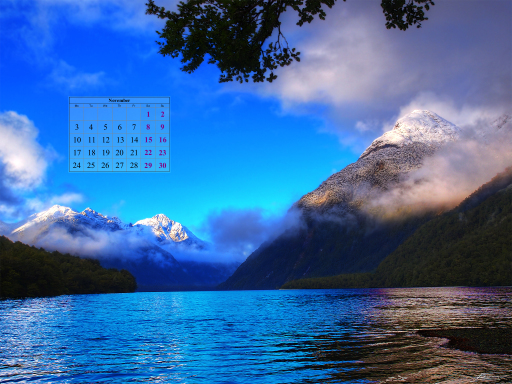

For this tutorial we'll be using 3 flickr photos by dexxus. Let us first thank dexxus for these amazing photos (btw, some of his photos are used in Linux Mint backgrounds).
Here's how the original photos look like:
Whoops! Not quite what we had in mind! That's because CalMagick invokes callirhoe with the default options, thus a yearly calendar is created. At the same time, minimal-entropy placement is chosen, starting at about 1/3 of image size (--min-size default argument). We may choose center placement (--placement), which by default centers at 80% (--max-size):
$ calmagick image.jpg --placement=center
However, CalMagick was designed with monthly calendars in mind. Usually, you want to have each month on a different photo. Just provide the additional callirhoe arguments (2 positional parameters), i.e., month and year (or use 0 for current month/year).
$ calmagick image.jpg 0 0
 |
Placement algorithm
The default placement algorithm is minimal-entropy overlap. Roughly, the algorithm works as follows:
- Find the smallest size minimum-entropy rectangle (
--min-size), by sliding through the image. Let S be that entropy. - Relax the value of S, 20% by default (
--relax). - Starting from the biggest size rectangles (
--max-size), scan through the image until the relaxed value S is attained. Try smaller rectangles if previous pass fails, until size limit is reached.
Let's see what happens if we relax by a bigger factor, say 50% instead of 20%.
$ calmagick image.jpg 0 0 --relax=0.5
Or we may choose not to relax at all:
$ calmagick image.jpg 0 0 --relax=0
 |
Note that still bigger rectangles are tried, if they happen to have the same (minimal) entropy. If you really want a fixed size, specify an "empty" size range, i.e., --min-size = --max-size. For example, we declare a fixed size of exactly 20% of the image dimensions as follows:
$ calmagick image.jpg 0 0 --min-size=0.2 --max-size=0.2
|  |
Duality
Instead of minimizing rectangle entropy, we might try maximizing it. This way, the calendar will cover the rectangle with the most "informational content". Again, the same placement algorithm applies, with relaxation etc.
$ calmagick image.jpg 0 0 --placement=max
I can't think of a reason why you would want to overlay calendars like this. However, entropy maximization can provide a smart way to crop the input images.
Smart-crop
Because of its usefulness, we can obtain the result of entropy minimization (or maximization, which is equivalent to minimizing the negative value) with the --test argument. Here's how we can smart-crop the input images at exactly 50% of their dimensions:
$ calmagick image.jpg --placement=max --min-size=0.5 --max-size=0.5 --test=crop
 |
Now you can overlay calendars on these cropped images, applying entropy minimization this time ;) Note that I have removed the extra callirhoe arguments, since callirhoe is not run at all.
Computer vision
We can even see how the algorithm works internally!
$ calmagick image.jpg --test=quant
 |
Thus, entropy minimization is like trying to find a big-dark (almost totally black) rectangle (shown as negative above).
Image pre/post processing
For convenience you can provide additional ImageMagick operators with the --pre-magic, --in-magick and --post-magick arguments (in this order!). The first set of options is applied at the original input image, the second one at the overlapped area, the third one at the final (composite) image. calmagick already adjusts brightness of the overlapped area (--brightness) by 10%, in order to enhance calendar visibility. Another useful argument is --saturation which adjusts color saturation of the overlayed area. Apart from --brightness and --saturation (calmagick arguments for convenience), --in-magick can give you access to arbitrary ImageMagick operators.
Working with multiple images
CalMagick also supports filename globbing (shell-like) to automatically process multiple images. In this case, the --range argument becomes handy, as it specifies the month range so that each photo is associated with a different calendar month. It is also possible to shuffle the input images (because globbing works lexicographically). Here's how to process all JPEG images in the current dir, matching the number of images and creating one monthly calendar for each image, starting from January 2015. We even ask for 2 threads (-j), in order to work on different images in parallel! We also specify the name of the folder where output images will be stored (--outdir).
$ calmagick '*.jpg' --range=1:0/2015 --outdir=multi -j 2
Conclusion
This should get you started with the basic functionality. There are more options to play with, simply run calmagick and you will see the full list along with some documentation.